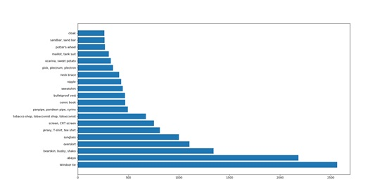

During two weeks hard working, we discussed together, worked together. Finally, we have processed those Weibo data and got a result (as shown in Figure 7) by our data-mining application. The result can be used for various purposes, like advertising, marketing, future studying, statistics and improving the user experience, etc. For example, people in Macao are likely to upload the selfie with their windsor tie as their profile photos. And according to this information, Gucci can offer their advertisements to those people wearing windsor tie.
Figure 7